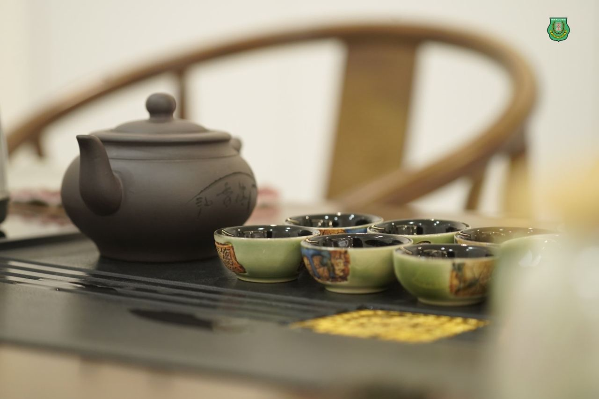
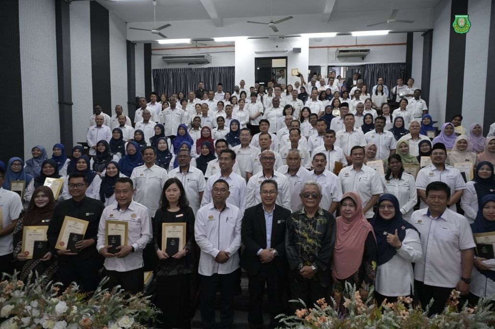
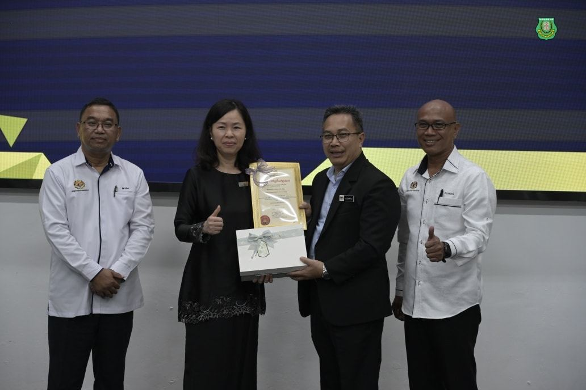
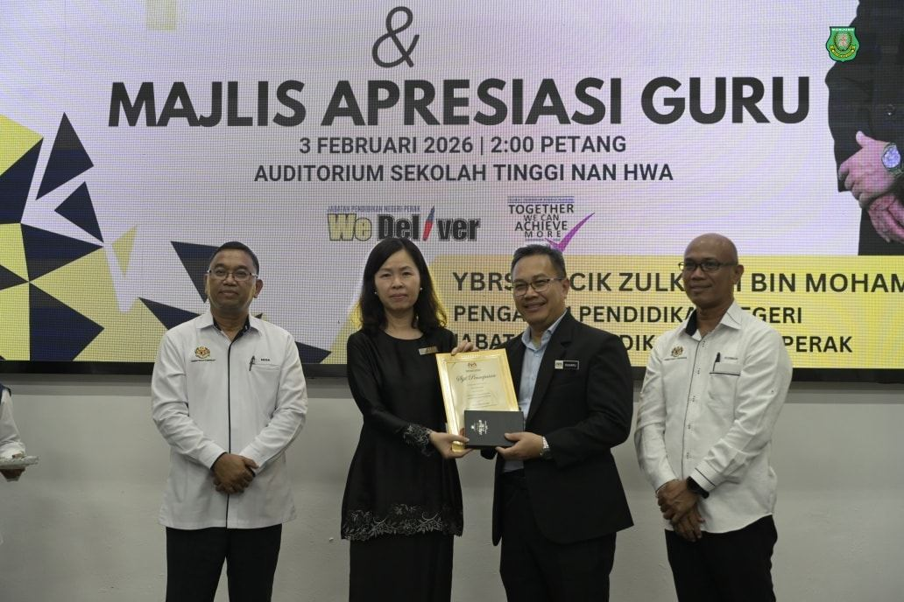
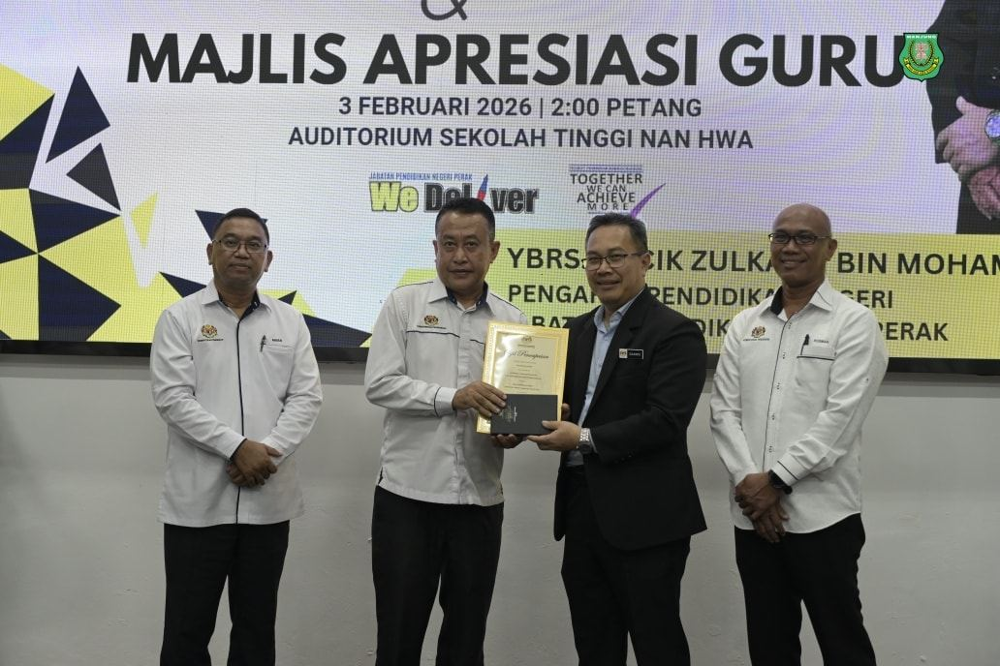
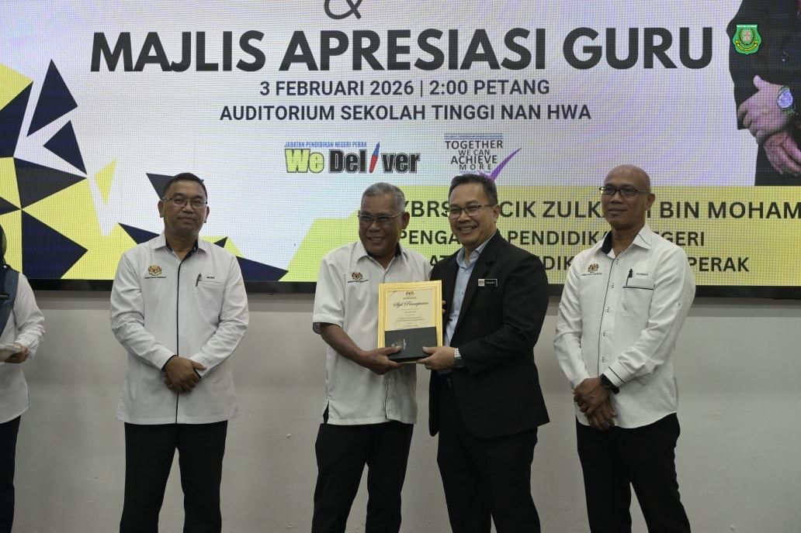
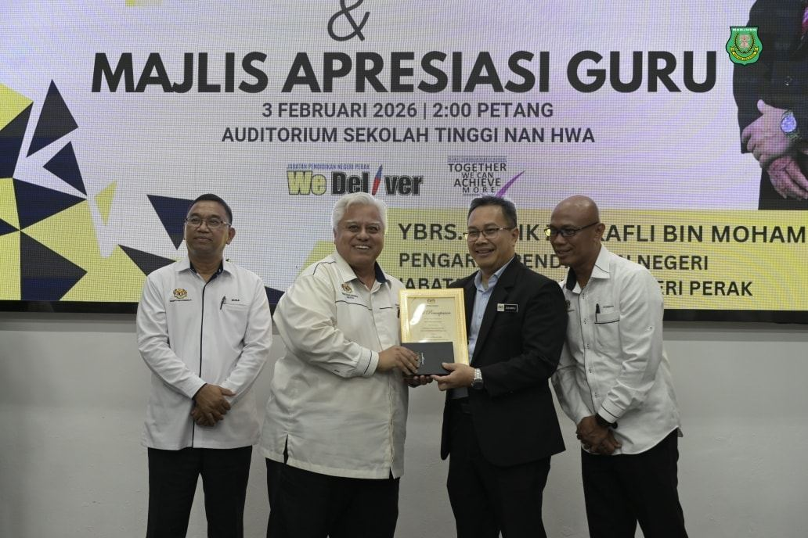
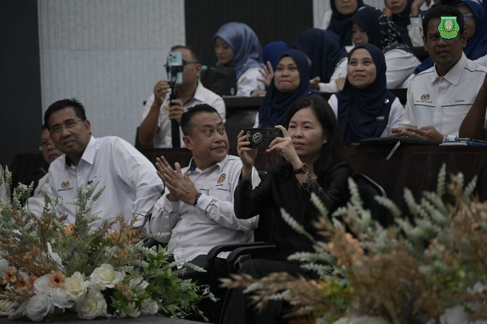

文化茶香润教育新篇：
文化茶香润教育新篇：
南华独中承办曼绒县校长专业集会
霹州教育厅长亲颁“私立学校领导特选奖”予陈丽冰校长
曼绒南华独立中学今日迎来了一场意义深远的教育盛事。本校于2026年2月 3日正式承办“曼绒县中小学校长专业集会（PGB）与霹雳州教育厅长交流会”。此次活动由霹雳州教育厅长 Encik Zulkafli bin Mohamed Mokhtar, P.M.P 亲临主持。大会汇聚了全曼绒县的国中小校长及教育行政官员，共同探讨“素质教育、成人成才、国家繁荣”的愿景。
作为承办单位，南华独中不仅提供场地与技术支持，同时特别安排李淑桦老师以及赖静绣老师精心准备茶道宴请外宾。随着清幽的茶香与熟稔的茶艺动作，这份属于中华传统的接待礼仪，成为了各族校长与教育官员了解中华文化最直观的窗口。
校长 陈丽冰博士 表示，这场集会不只是教育层级的对话，更是一次深度的文化融合。她指出，南华始终坚持将文化素养植入校园日常，此次透过茶道与外宾交流，是为了传达：教育的本质在于情感的链结与文化的共振。在繁忙的行政讨论之余，让外宾体验中华文化的宁静与深度，正是“教育是最美的遇见”的不俗体现。
霹雳州教育厅长 Encik Zulkafli bin Mohamed Mokhtar 于会上亲自颁发“私立学校领导奖冠军（Anugerah Khas Pendidikan - Kepimpinan Sekolah Swasta, Johan）”予 陈丽冰博士，以表扬其在领导私立学校教改与区域教育合作中的杰出贡献。
曼绒县 PGB 集会的尾声，不仅安排在环境舒适的多用途学生餐厅用膳，本校舞蹈团以及由学生组成的乐团也在宴客之间进行表演舞蹈及演奏，在唇齿留香之际也带来了赏心悦目的文艺熏陶，活动结束后获得了不少来自各校领导们的称赞与认同。







